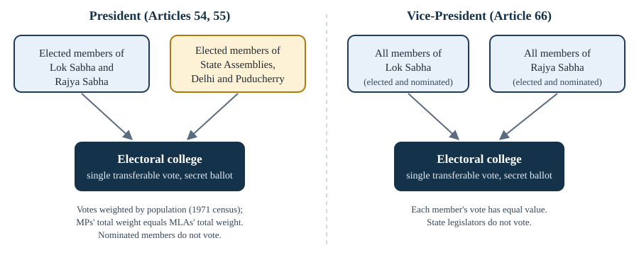

Chapter 5: The Union Executive¶
The President, the Vice-President, the Prime Minister and the Council of Ministers
Learning outcomes
When you have finished this chapter you should be able to:
- distinguish the nominal executive from the real executive in a parliamentary system;
- explain how the President is elected, and compute the value of the votes of legislators in a simple case;
- state the qualifications, term and procedure for impeachment of the President;
- describe the President's executive, legislative, financial, judicial, diplomatic, military and emergency powers, including the veto and the ordinance power;
- explain Article 74 and the situations in which the President may act with some discretion;
- describe the election, functions and removal of the Vice-President;
- explain the position and powers of the Prime Minister and the principle of collective responsibility;
- describe the composition of the Council of Ministers and the role of the Attorney General.
5.1 Two executives¶
Part V of the Constitution begins with the Union executive (Articles 52 to 78). It consists of the President, the Vice-President, the Prime Minister and the Council of Ministers, and the Attorney General.
India has a parliamentary system of government, borrowed from Britain. In such a system there are two executives:
- a nominal (or formal, or constitutional) executive, in whose name government is carried on: in India, the President;
- a real executive, which actually takes the decisions: the Council of Ministers headed by the Prime Minister.
The real executive is drawn from the legislature and is collectively responsible to its lower House, the Lok Sabha. It stays in office only so long as it has the confidence of the Lok Sabha. This is the central difference from the presidential system of the United States, where the President is both head of State and head of government, is elected for a fixed term and is not responsible to the legislature.
Article 53 vests the executive power of the Union in the President, to be exercised by him either directly or through officers subordinate to him. Article 74 then provides that there shall be a Council of Ministers with the Prime Minister at its head to aid and advise the President, who shall act in accordance with that advice. Read together, these two articles create the parliamentary executive.
Key idea
The President is the head of the State; the Prime Minister is the head of the government. Executive power is vested in the President (Article 53), but the President acts on the advice of the Council of Ministers headed by the Prime Minister (Article 74), which is collectively responsible to the Lok Sabha (Article 75(3)).
5.2 The President: election, term and removal¶
The electoral college¶
The President is not elected directly by the people. Under Article 54, the President is elected by an electoral college consisting of:
- the elected members of both Houses of Parliament; and
- the elected members of the Legislative Assemblies of the States, including (since the 70th Amendment, 1992) the National Capital Territory of Delhi and the Union Territory of Puducherry.
Nominated members of Parliament and of the Assemblies, and members of the State Legislative Councils, do not take part.

The value of each vote¶
Article 55 aims at two kinds of fairness. There should be uniformity among the States, so that a legislator from a large State carries more weight than one from a small State in proportion to population; and there should be parity between the States taken together and the Union, so that the total weight of the members of Parliament equals the total weight of all the members of the Assemblies.
The value of the vote of an elected member of a State Legislative Assembly is
rounded to the nearest whole number. The value of the vote of an elected member of Parliament is
again rounded. The population used is that of the 1971 census; under the 84th Amendment (2001), this will continue until the figures of the first census taken after the year 2026 have been published.
Worked example 5.1: Weighting the votes
Situation. Imagine a small country with three States and fifteen elected members of Parliament. The populations (at the relevant census) and the numbers of elected MLAs are as follows.
- State A: population 60,00,000 (six million); 60 elected MLAs.
- State B: population 24,00,000 (2.4 million); 40 elected MLAs.
- State C: population 9,00,000 (0.9 million); 30 elected MLAs.
Find the value of each MLA's vote, the total value of the MLAs' votes, and the value of each MP's vote.
Answer.
- State A: \(6{,}000{,}000 / 60 = 100{,}000\); divided by 1000 gives 100 per MLA; total \(60 \times 100 = 6{,}000\).
- State B: \(2{,}400{,}000 / 40 = 60{,}000\); divided by 1000 gives 60 per MLA; total \(40 \times 60 = 2{,}400\).
- State C: \(900{,}000 / 30 = 30{,}000\); divided by 1000 gives 30 per MLA; total \(30 \times 30 = 900\).
Total value of the MLAs' votes \(= 6{,}000 + 2{,}400 + 900 = 9{,}300\). Each MP's vote is worth \(9{,}300 / 15 = 620\), so the fifteen MPs together also carry \(9{,}300\). The whole electoral college carries \(18{,}600\), half from the States and half from Parliament. An MLA from State A carries more weight than one from State C because each represents more people.
The single transferable vote¶
The election is held by proportional representation by means of the single transferable vote, by secret ballot (Article 55(3)). Each elector ranks the candidates in order of preference. To win, a candidate must obtain a quota of more than half the total value of the valid votes. If no candidate reaches the quota on first preferences, the candidate with the lowest value is eliminated and his or her ballots are transferred to the next preference marked on them. This continues until a candidate reaches the quota.
A misleading name
The phrase "proportional representation" is a misnomer here. Proportional representation normally applies where two or more seats are to be filled. In the election of the President only one seat is to be filled, so the system is really a preferential (or alternative) vote with a majority requirement.
Disputes about the election of the President or the Vice-President are decided by the Supreme Court, whose decision is final (Article 71). An election cannot be challenged on the ground that the electoral college was incomplete because some seats were vacant.
Qualifications, term and vacancy¶
A candidate for President must be a citizen of India, have completed 35 years of age, be qualified for election as a member of the Lok Sabha, and not hold an office of profit under the Union, a State or a local authority (Article 58). (The President, Vice-President, Governors and ministers are not treated as holding offices of profit for this purpose.) The nomination must be supported by fifty electors as proposers and fifty as seconders, under the Presidential and Vice-Presidential Elections Act, 1952.
The President holds office for five years and is eligible for re-election (Articles 56 and 57). The oath is administered by the Chief Justice of India (Article 60). The President may resign by writing to the Vice-President. When the office falls vacant through death, resignation or removal, an election must be held within six months, and in the meantime the Vice-President acts as President (Articles 62 and 65).
Impeachment¶
The President can be removed by impeachment for "violation of the Constitution" (Article 61). The procedure is quasi-judicial.
- A charge is brought in either House of Parliament by a resolution, moved after at least 14 days' written notice signed by at least one-quarter of the total members of that House.
- The resolution must be passed by a majority of not less than two-thirds of the total membership of that House.
- The other House then investigates the charge, or causes it to be investigated. The President has the right to appear and to be represented.
- If the other House also passes a resolution, by two-thirds of its total membership, declaring that the charge has been sustained, the President is removed from the date of the resolution.
Note that nominated members of Parliament, who do not vote in the election, do take part in impeachment, while the elected members of the State Assemblies, who do vote in the election, do not. No President has ever been impeached.
5.3 The powers of the President¶
The President's powers are wide on paper. In practice almost all are exercised on the advice of the Council of Ministers (section 5.4).
Executive powers¶
All executive action of the Government of India is taken in the President's name. The President appoints the Prime Minister and, on the Prime Minister's advice, the other ministers; and appoints the Attorney General, the Comptroller and Auditor-General, the Chief Election Commissioner and Election Commissioners, the chairman and members of the Union Public Service Commission, the Governors of States, the members of the Finance Commission, and the judges of the Supreme Court and High Courts. The President administers the Union Territories through administrators, and can declare areas to be Scheduled Areas.
Legislative powers¶
The President is a part of Parliament (Article 79). The President:
- summons and prorogues the Houses and can dissolve the Lok Sabha (Article 85);
- addresses Parliament at the first session after each general election and at the first session of each year (Article 87);
- nominates 12 members of the Rajya Sabha with special knowledge or practical experience in literature, science, art and social service (Article 80);
- recommends certain bills, such as money bills and bills to form new States, before they can be introduced;
- gives or withholds assent to bills (Article 111); and
- promulgates ordinances (Article 123).
Anglo-Indian nominations ended
Until January 2020, the President could also nominate up to two members of the Anglo-Indian community to the Lok Sabha (Article 331). The 104th Amendment (2019) did not extend this provision, so it has lapsed.
The veto. When a bill passed by both Houses is presented, the President has three choices under Article 111.
| Type of veto | What the President does | When it is available |
|---|---|---|
| Absolute veto | Withholds assent; the bill does not become law | In practice used for private members' bills, or for a government bill when the government has changed and the new ministry advises against it |
| Suspensive veto | Returns the bill for reconsideration; if Parliament passes it again, with or without amendment, the President must give assent | Not for money bills |
| Pocket veto | Takes no action; the Constitution fixes no time limit for the President's decision | Used rarely; the best-known instance was the Indian Post Office (Amendment) Bill in 1986 |
Table 5.1. The President's veto over bills of Parliament.
The President has no veto over constitutional amendment bills: since the 24th Amendment (1971), the President must give assent to them (Article 368(2)). For a money bill, which is introduced with the President's prior recommendation, the President may give or withhold assent but cannot return it; in practice assent is given.
State bills and time limits
A Governor may reserve a State bill for the consideration of the President (Article 200). The President may then assent, withhold assent or, for a bill other than a money bill, direct the Governor to return it to the State legislature, which must reconsider it within six months; even if it is passed again, the President is not bound to assent (Article 201). Whether the courts can set time limits for decisions of Governors and the President on bills was the subject of significant litigation. In State of Tamil Nadu v. Governor of Tamil Nadu (April 2025) a two-judge bench laid down time limits and a form of deemed assent. The President then made a reference under Article 143 (May 2025), and in November 2025 a five-judge Constitution Bench gave its advisory opinion: courts cannot fix rigid timelines for Governors and the President, and the Constitution has no concept of deemed assent; the merits of a decision on a bill are not open to review, but prolonged, unexplained and indefinite inaction can attract a limited judicial direction to decide. An advisory opinion does not bind the President in the way a judgment binds parties, and the law may develop further, so check the latest position.
Ordinances. When either House of Parliament is not in session and the President is satisfied that circumstances exist that make immediate action necessary, the President may promulgate an ordinance (Article 123). An ordinance has the same force as an Act of Parliament, but:
- it can be made only on subjects on which Parliament can legislate, and is subject to the same limits (it cannot, for example, violate Fundamental Rights or amend the Constitution);
- it must be laid before both Houses when they reassemble, and it ceases to operate six weeks after Parliament reassembles, unless the Houses disapprove it earlier;
- the President may withdraw it at any time.
Since the gap between two sessions cannot exceed six months (Article 85), an ordinance can last at most about six months and six weeks without parliamentary approval. In Krishna Kumar Singh v. State of Bihar (2017), the Supreme Court held that re-promulgating ordinances repeatedly without placing them before the legislature is a fraud on the Constitution, and that the President's or Governor's satisfaction is open to judicial review on limited grounds.
Financial powers¶
Money bills and demands for grants can be introduced only on the President's recommendation. The President causes the annual financial statement (the budget) to be laid before Parliament (Article 112), can make advances from the Contingency Fund of India, and constitutes a Finance Commission every five years (Article 280).
Judicial powers: pardon¶
Under Article 72, the President can grant pardons, reprieves, respites or remissions of punishment, or suspend, remit or commute the sentence of any person convicted of an offence, in three kinds of case: offences against a Union law, sentences by a court martial, and all sentences of death.
| Term | Meaning |
|---|---|
| Pardon | Removes both the sentence and the conviction |
| Commutation | Substitutes a lighter form of punishment (for example, life imprisonment for death) |
| Remission | Reduces the period of a sentence without changing its character |
| Respite | Awards a lesser sentence because of a special fact, such as pregnancy or physical disability |
| Reprieve | Temporarily stays the execution of a sentence, especially a death sentence, pending a decision |
Table 5.2. Forms of clemency under Article 72.
The power is exercised on the advice of the Council of Ministers (Maru Ram v. Union of India, 1980). The courts can review a decision on limited grounds, such as that it was arbitrary, mala fide or made without considering relevant material (Epuru Sudhakar v. Government of Andhra Pradesh, 2006). The Governor has a similar but narrower power under Article 161; only the President can grant clemency for a sentence by court martial, and only the President can pardon a sentence of death.
Diplomatic, military and emergency powers¶
International treaties and agreements are negotiated and concluded in the President's name, and the President receives and sends diplomats. The President is the Supreme Commander of the Defence Forces, though the exercise of this command is regulated by law. Finally, the President can proclaim three kinds of emergency: national (Article 352), in a State (Article 356) and financial (Article 360), studied in Chapter 10.
5.4 The position of the President¶
The framers intended the President to be a constitutional head, like the British monarch. The original Article 74 said that the Council of Ministers would "aid and advise" the President, but did not say in so many words that the advice was binding. Two amendments settled the question.
- The 42nd Amendment (1976) made the advice binding: the President "shall act in accordance with such advice".
- The 44th Amendment (1978) added a proviso: the President may require the Council of Ministers to reconsider its advice, once; but the President shall act in accordance with the advice tendered after reconsideration.
The Supreme Court had already taken the same view in Shamsher Singh v. State of Punjab (1974): the President and Governors exercise their formal powers on the advice of their ministers, save in a few well-known exceptional situations.
Situational discretion¶
The President has no constitutional discretion in the way some Governors do (Chapter 9), but certain situations leave room for judgement, because there is no Council of Ministers whose advice can be followed, or because that Council has lost its authority.
- Appointing a Prime Minister when no party or coalition has a clear majority in the Lok Sabha, or when the Prime Minister dies in office and there is no obvious successor. The President must then choose the person most likely to command the confidence of the House, and may ask that person to prove a majority on the floor of the House within a stated time.
- Dismissing a Council of Ministers that has clearly lost the confidence of the Lok Sabha and refuses to resign.
- Dissolving the Lok Sabha on the advice of a Council of Ministers that has lost its majority; the President may then consider whether an alternative government can be formed.
In addition, the President has the right, under Article 78, to be informed by the Prime Minister of all decisions of the Council of Ministers and proposals for legislation, and may ask that a matter decided by a single minister be considered by the whole Council.
Worked example 5.2: A hung Parliament
Situation. After a general election, no party has a majority in the 543-member Lok Sabha. Party X has 230 seats and Party Y has 190. Party Y presents letters showing that it has the support of smaller parties and independents bringing its total to 280. Party X claims it will win over enough members once in office. Whom should the President invite?
Answer. The test is who is most likely to command the confidence of the Lok Sabha, not who leads the largest single party. A majority of the full House is 272. Party Y has shown written support of 280 members, which is a stronger claim than Party X's expectation. The President may invite the leader of Party Y to form the government and ask him or her to seek a vote of confidence within a fixed period. The floor of the House, not the President's estimate, finally decides: S. R. Bommai (1994) emphasised the floor test as the proper way to determine majority support.
5.5 The Vice-President¶
The office of Vice-President was modelled on that of the American Vice-President. It is the second highest office in the country.
- Election (Article 66). By an electoral college of all members of both Houses of Parliament, elected and nominated, by proportional representation by single transferable vote and secret ballot. State legislators do not take part, and each vote has the same value.
- Qualifications. A citizen, at least 35 years old, qualified for election as a member of the Rajya Sabha, and not holding an office of profit.
- Term. Five years; eligible for re-election. Resignation is addressed to the President.
- Removal (Article 67). By a resolution of the Rajya Sabha passed by a majority of all its then members (an "effective majority") and agreed to by the Lok Sabha (by a simple majority). At least 14 days' notice is needed. No grounds are stated in the Constitution.
Functions. The Vice-President is the ex officio Chairman of the Rajya Sabha (Article 64) and presides over its proceedings. When the office of President falls vacant, the Vice-President acts as President until a new President takes office, for at most six months; while doing so, the Vice-President does not perform the duties of Chairman of the Rajya Sabha (Article 65).
Common confusion
The President is removed by impeachment for violation of the Constitution, with a two-thirds majority of the total membership in both Houses. The Vice-President is removed by a resolution that starts in the Rajya Sabha, with an effective majority there and a simple majority in the Lok Sabha, and no grounds are specified. Do not use the word "impeachment" for the Vice-President.
5.6 The Prime Minister¶
Appointment¶
Article 75(1) says only that the Prime Minister shall be appointed by the President. By convention, the President appoints the leader of the party or coalition that has a majority in the Lok Sabha. The Prime Minister may be a member of either House. A person who is not a member of either House may be appointed, but must become a member within six months (Article 75(5)).
The Prime Minister has no fixed term. Formally, he or she holds office during the pleasure of the President; in practice, so long as the Council of Ministers retains the confidence of the Lok Sabha.
Powers and functions¶
- Head of the Council of Ministers. The other ministers are appointed by the President on the Prime Minister's advice. The Prime Minister allocates and reshuffles portfolios, can ask a minister to resign or advise the President to dismiss one, and presides over meetings of the Council and the Cabinet. The resignation or death of the Prime Minister dissolves the whole Council.
- Link between President and Council. Under Article 78, the Prime Minister communicates to the President all decisions of the Council and furnishes information on administration and legislation.
- Leader in Parliament. The Prime Minister advises the President on summoning and proroguing sessions and on dissolving the Lok Sabha, and announces government policies on the floor of the House.
- Other roles. The Prime Minister chairs bodies such as NITI Aayog, the National Development Council and the Inter-State Council, and is the chief spokesperson of the government at home and abroad.
The Prime Minister was once described in British theory as "first among equals" (primus inter pares) among ministers. In practice the office is far more powerful than that phrase suggests, especially when the Prime Minister's party has a clear majority.
5.7 The Council of Ministers¶
Composition¶
The Council of Ministers has three ranks:
- Cabinet Ministers, who head the most important ministries and form the Cabinet;
- Ministers of State, who may hold independent charge of a ministry or be attached to a Cabinet Minister;
- Deputy Ministers, who assist other ministers. (This rank has not been used in recent decades.)
The 91st Amendment (2003) introduced two limits (Article 75(1A) and (1B)): the total number of ministers, including the Prime Minister, shall not exceed 15 per cent of the total number of members of the Lok Sabha; and a member disqualified for defection under the Tenth Schedule cannot be appointed a minister until the end of his or her term or re-election.
The word "Cabinet" did not appear in the original Constitution. It was inserted in Article 352 by the 44th Amendment (1978), which requires a written decision of the Union Cabinet before a national emergency is proclaimed. The Cabinet works through Cabinet committees (for example, on appointments, security and economic affairs), which are set up under the Government of India (Transaction of Business) Rules and are not mentioned in the Constitution.
Responsibility¶
- Collective responsibility (Article 75(3)). The Council of Ministers is collectively responsible to the Lok Sabha. All ministers share responsibility for every decision of the Cabinet; a minister who disagrees must either support the decision in public or resign. If the Lok Sabha passes a no-confidence motion against the Council (or rejects a confidence motion, or defeats a major government measure such as the budget), the whole Council must resign.
- Individual responsibility (Article 75(2)). Ministers hold office during the pleasure of the President, which in practice means that the Prime Minister can have any minister removed.
- No legal responsibility. In India there is no requirement that an order of the President be countersigned by a minister, and courts may not inquire into what advice was given (Article 74(2)).
The no-confidence motion
The Constitution does not mention a no-confidence motion; it is provided by the rules of procedure of the Lok Sabha. A motion of no confidence in the Council of Ministers needs the support of at least 50 members to be admitted. It can be moved only in the Lok Sabha, since the Council is responsible only to that House.
5.8 The Attorney General¶
The Attorney General for India (Article 76) is the highest law officer of the Union government. He or she must be qualified to be appointed a judge of the Supreme Court, is appointed by the President and holds office during the pleasure of the President. The Attorney General gives advice to the Government of India on legal matters referred by the President, appears on its behalf in the Supreme Court and High Courts, and has the right to speak and take part in the proceedings of both Houses of Parliament and their committees, but not to vote (Article 88). The Attorney General is assisted by the Solicitor General and Additional Solicitors General, whose offices are not created by the Constitution.
Summary
- India has a parliamentary executive: the President is the nominal head of State; the Council of Ministers headed by the Prime Minister is the real executive, collectively responsible to the Lok Sabha.
- The President is elected by the elected members of both Houses of Parliament and of the State Legislative Assemblies (including Delhi and Puducherry), with votes weighted by population so as to secure uniformity among States and parity between States and Union, by single transferable vote.
- The President must be a citizen, at least 35, qualified for the Lok Sabha; serves five years; can be impeached for violation of the Constitution by two-thirds of the total membership of each House.
- Powers: executive, legislative (including the absolute, suspensive and pocket veto and ordinances under Article 123), financial, judicial (pardons under Article 72), diplomatic, military and emergency.
- Under Article 74, as amended in 1976 and 1978, the President must act on ministerial advice, but may return it once for reconsideration; real discretion arises only in exceptional situations such as a hung Parliament.
- The Vice-President is elected by all members of both Houses, is ex officio Chairman of the Rajya Sabha, acts as President in a vacancy, and is removed by a Rajya Sabha resolution agreed to by the Lok Sabha.
- The Prime Minister heads the Council of Ministers, which is limited to 15 per cent of the Lok Sabha's strength (91st Amendment) and is collectively responsible to the Lok Sabha.
5.9 Exercises¶
Exercise 1
Who are members of the electoral college for the President? Name two groups of legislators who are excluded.
Answer
The elected members of both Houses of Parliament and the elected members of the Legislative Assemblies of the States, Delhi and Puducherry. Excluded: nominated members of Parliament and of the Assemblies, and members of the State Legislative Councils.
Exercise 2
A State had a population of 1,20,00,000 at the 1971 census and has 150 elected MLAs. Compute the value of the vote of each MLA and the total value of the State's MLAs' votes.
Answer
\(12{,}000{,}000 / 150 = 80{,}000\); divided by 1000 gives 80 per MLA. Total: \(150 \times 80 =\) 12,000.
Exercise 3
Explain the difference between a suspensive veto and a pocket veto. Can either be used against a constitutional amendment bill?
Answer
Under a suspensive veto, the President returns a bill (other than a money bill) for reconsideration; if Parliament passes it again, the President must assent. Under a pocket veto, the President neither assents nor returns the bill, relying on the absence of any time limit in Article 111. Neither can be used against a constitutional amendment bill: since the 24th Amendment (1971), the President is bound to give assent to it.
Exercise 4
An ordinance is promulgated on 1 March, while Parliament is in recess. Parliament reassembles on 15 April and does nothing about the ordinance. On what date will it cease to operate?
Answer
Six weeks (42 days) after reassembly. Counting from 15 April: 15 days remain in April after the 15th, so 42 days fall on 27 May. (Exact counting conventions aside, the principle is that it lapses six weeks after Parliament reassembles unless disapproved earlier.)
Exercise 5
How does the removal of the Vice-President differ from that of the President?
Answer
The President is impeached for "violation of the Constitution": a charge in either House, with 14 days' notice signed by a quarter of its members, passed by two-thirds of its total membership, investigated and sustained by two-thirds of the total membership of the other House. The Vice-President is removed by a resolution of the Rajya Sabha passed by a majority of all its then members and agreed to by the Lok Sabha, after 14 days' notice; no grounds are specified.
Exercise 6
What did the 91st Amendment (2003) provide about the Council of Ministers?
Answer
The total number of ministers, including the Prime Minister, may not exceed 15 per cent of the total membership of the Lok Sabha (Article 75(1A)), and a member disqualified for defection may not be appointed a minister until the end of the term or re-election (Article 75(1B)). (It made similar provisions for the States, with a minimum of twelve ministers.)
Exercise 7
In which situations may the President exercise some personal judgement despite Article 74?
Answer
When appointing a Prime Minister if no party or coalition has a clear majority (or on the death of a Prime Minister with no obvious successor); when dismissing a Council of Ministers that has lost the confidence of the Lok Sabha but refuses to resign; and when deciding on dissolution of the Lok Sabha on the advice of a ministry that has lost its majority. The President may also return advice once for reconsideration.
5.10 Quiz¶
Check yourself: the Union executive
Exercise 1
Who administers the oath of office to the President?
- The Vice-President
- The Speaker
- The Chief Justice of India
- The Prime Minister
Answer
The Chief Justice of India
Exercise 2
What is the minimum age for election as President?
- 25
- 30
- 35
- 40
Answer
35
Exercise 3
Under which article can the President promulgate ordinances?
- Article 72
- Article 74
- Article 123
- Article 213
Answer
Article 123
Exercise 4
The Vice-President is the ex officio Chairman of which body?
- Lok Sabha
- Rajya Sabha
- NITI Aayog
- Inter-State Council
Answer
Rajya Sabha
Exercise 5
The Council of Ministers is collectively responsible to the ___.
Answer
Lok Sabha / House of the People
Exercise 6
Which amendment limited the size of the Council of Ministers to 15 per cent of the Lok Sabha?
- 42nd
- 44th
- 52nd
- 91st
Answer
91st
Exercise 7
Match each form of clemency with its meaning.
| A | B |
|---|---|
| Pardon | Reduces the period of sentence |
| Commutation | Temporarily stays execution |
| Remission | Removes sentence and conviction |
| Reprieve | Substitutes a lighter punishment |
Answer
Pardon — Removes sentence and conviction; Commutation — Substitutes a lighter punishment; Remission — Reduces the period of sentence; Reprieve — Temporarily stays execution
Exercise 8
Who decides disputes about the election of the President?
- Election Commission
- Parliament
- Supreme Court
- Delhi High Court
Answer
Supreme Court